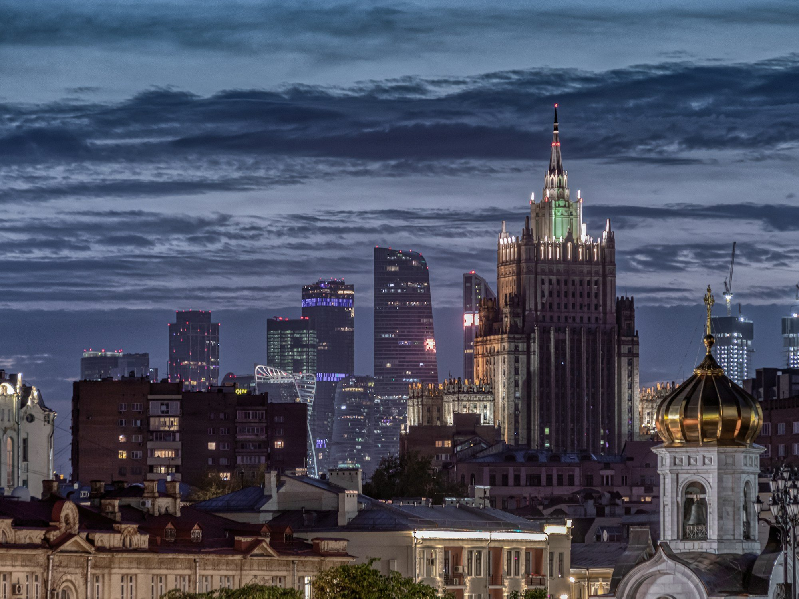

Событие · 4-я очередь
Жилой комплекс года бизнес-класса Москвы
ДонстройЭксперт по жилой недвижимости
Ваше место в городе начинается с правильного выбора квартиры.

Здесь — ориентиры для покупки квартиры в Москве и области: как сравнить районы, разобраться в планировках и оценить проекты застройщиков.
Начните с того, что важно именно вам. Затем переходите к конкретным домам.
Обсудить ваши критерииУдобная квартира — та, которая подходит вашей жизни, а не только красиво выглядит на плане.
Работа, семья, привычные маршруты. Сначала определяем, какой должна быть жизнь в новом доме.
Цена покупки, ремонт, переезд и содержание. Сравниваем расходы целиком.
Район, планировка, застройщик и документы. У каждого варианта должны быть понятные плюсы и ограничения.
Лидеры по объёму строительства. Проверяем масштаб, затем изучаем конкретный проект.
Объём текущего строительства в Москве на 01.10.2026. Данные ЕРЗ в публикации IRN от 02.10.2026. Размер компании не определяет качество конкретного дома. Фонд реновации представлен отдельно от коммерческого рынка.
Посмотреть топ-10Архитектура, среда и качество жизни. Проекты, отмеченные отраслевой премией.
Победители отдельных номинаций Московской премии Urban 2025. Карточки не упорядочены по качеству: каждый проект оценивался в своей категории. Дата проверки: 04.10.2026.
Жилой комплекс года бизнес-класса Москвы
ДонстройЛучший строящийся комплекс бизнес-класса Москвы
October GroupЖилой комплекс года премиум-класса Москвы
ПионерЛучший строящийся комплекс премиум-класса Москвы
Сумма элементовЛучший жилой комплекс элит-класса Москвы
АбсолютЛучший строящийся комплекс комфорт-класса Москвы
Страна ДевелопментКороткие руководства о районе, планировке и бюджете будущей квартиры.
Как проверить район Москвы до покупки: маршруты, шум, инфраструктура и планы развития.
ПланировкиКак сравнить планировки квартир: полезная площадь, хранение, свет и расстановка мебели.
БюджетКакие расходы учесть кроме цены квартиры: ремонт, переезд, содержание и резерв.
Расскажите, где вы хотите жить, какой бюджет рассматриваете и что для вас важно в новом доме.